关于G1
宇树人形机器人开发使用温馨提示:
由于普通大众，都比较喜欢和真人运动更加接近和自然的动作，所以以下几点人形机器人使用事项，还请大家重视，尤其是在拍摄机器人视频的时候： 1. 开发的腿部运动程序，尽可能使膝关节到直立，或者接近直立状态； 2. 尽可能降低步频，并且尽可能避免原地踏步； 3. 双脚略微靠拢，行走的时候尽可能避免撇开双脚；
希望以上内容能对您有所帮助。
成果视频署名建议
尊敬的开发者您好，我们建议您在发布自己的研究成果视频时，可以在视频中的显著位置全视频添加您实验室的名称或标志（Logo）。以免后续视频传播的时候，普通群众不清楚视频实际的出处。在此感谢您对宇树科技的支持。
部件名称
G1 整机分为上半身和下半身，具备多个自由度。单手臂拥有 5 个自由度和 7 个自由度两个版本，包括肩身关节、上臂关节、手肘关节和腕关节（选配）。单腿拥有 6 个自由度，包括胯关节、腿关节、髋关节、膝关节和踝关节。腰部具备 1自由度和3自由度两个版本，即腰关节。整机根据版本不同，可以分为 G1 基础版本 23 自由度，G1-EDU可选23~43 自由度，拥有多个关节电机自由度，使得机器人能够实现精确的运动和姿态控制。
| 类型 |
G1 | G1-EDU |
|---|---|---|
| 总自由度 | 23 | 23~43 |
| 单腿自由度 | 6 | 6 |
| 腰部自由度 | 1 | 1+（可加选2个腰部自由度） |
| 单手臂自由度 | 5 | 5 |
| 单手自由度 | / | 7（可加选力控3指灵巧手Dex3-1）+ 2（可加选 2 个手腕自由度） |
| 部件说明 | 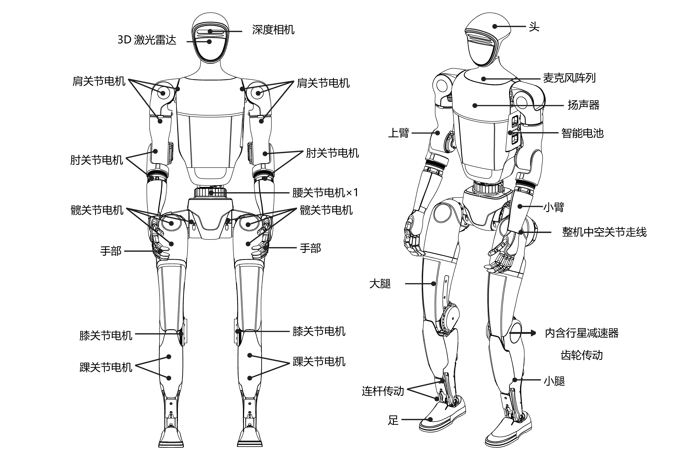 |
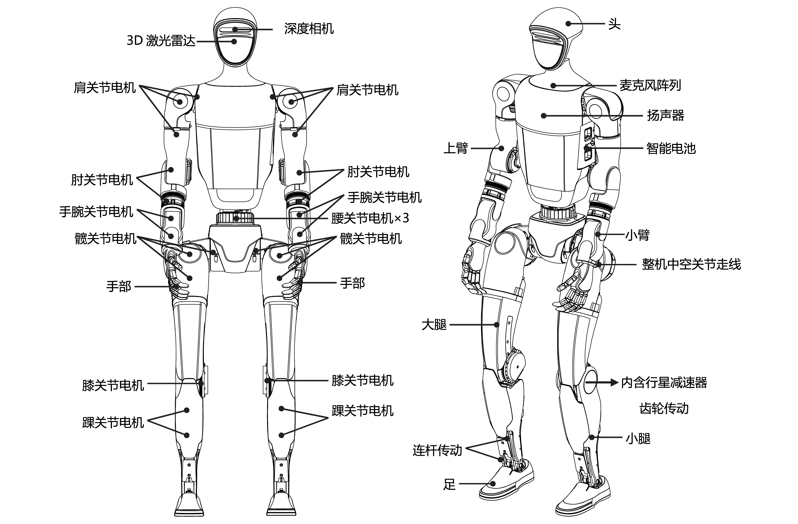 |
灵巧手 Dex3-1
| 灵巧手 Dex3-1 电气参数 | |
|---|---|
| 渲染图 | 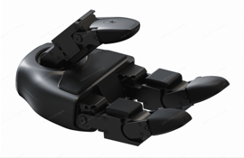 |
| 工作电压 | 12-58V |
| 感知范围 | 10g-2500g |
| 自由度 | 总自由度：7 1.大拇指 3 个主动自由度; 2.食指 2 个主动自由度; 3.中指 2 个主动自由度。 |
| 关节角度 | 大拇指：0°~+100°, -35°~+60°, -60°~+60°； 食指、中指：0°~+90°，0°~+100° |
| 阵列传感器数量 | 9 |
灵巧手使用提示
在使用灵巧手时，务必确保机器人动作不会使灵巧手对机体产生干涉。您可以增加一些肩部电机的向外偏置，避免灵巧手与机体产生碰撞。开发时，不建议带着灵巧手做过于剧烈的动作，如奔跑、平衡性测试等。
安装孔位：单位mm
如果需要使用G1安装孔，请先取下孔位上的标贴。
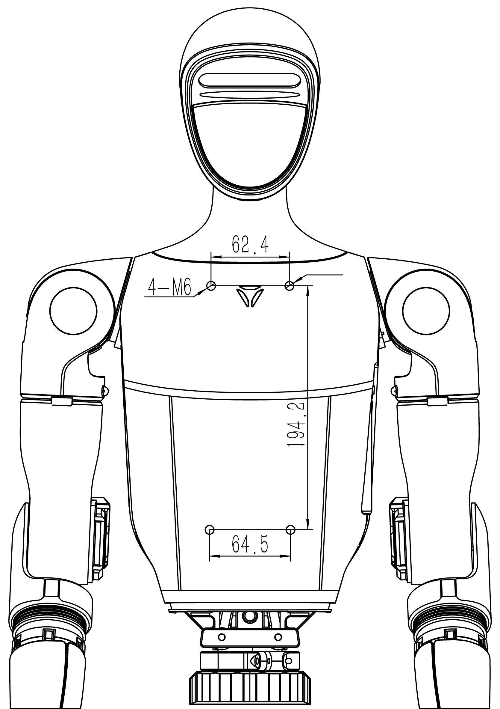
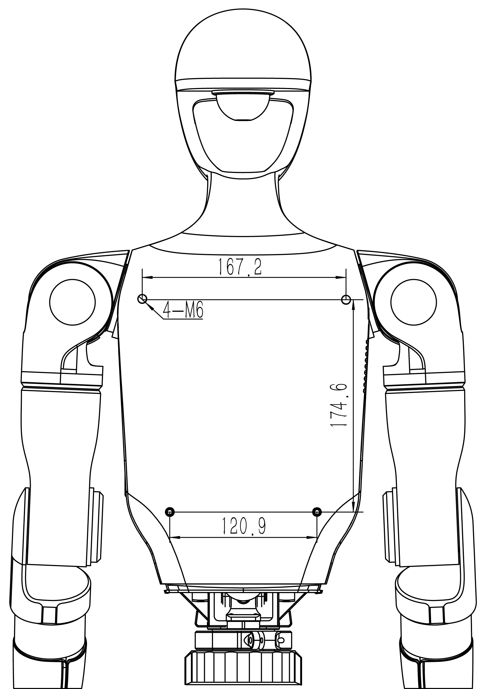
电气接口
G1 的顶部配备了电气接口，这些接口用于连接各个机身关节电机、传感器外设、网口等。这样的设计使您能够方便地进行调试、排查问题以及进行二次开发。
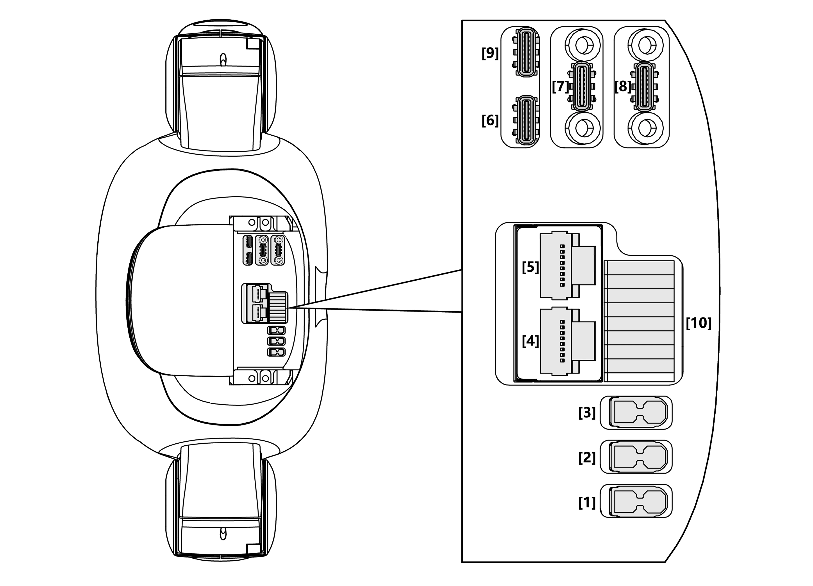
| 序号 | 接口类型 | 接口简称 | 接口说明 |
|---|---|---|---|
| 1 | XT30UPB-F | VBAT | 58V/5A 电池电源输出（此处直连电池电源） |
| 2 | XT30UPB-F | 24V | 24V/5A电源输出 |
| 3 | XT30UPB-F | 12V | 12V/5A电源输出 |
| 4 | RJ45 | 1000 BASE-T | 千兆以太网 |
| 5 | RJ45 | 1000 BASE-T | 千兆以太网 |
| 6 | Type-C | Type-C | 支持USB3.0 host，5V/1.5A电源输出 |
| 7 | Type-C | Type-C | 支持USB3.0 host，5V/1.5A电源输出 |
| 8 | Type-C | Type-C | 支持USB3.0 host，5V/1.5A电源输出 |
| 9 | Type-C | Alt Mode Type-C | 支持USB3.2 host，支持DP1.4 |
| 10 | I/O | I/O OUT | 12V: 12V/3A电源输出 GPIO详见下表 |
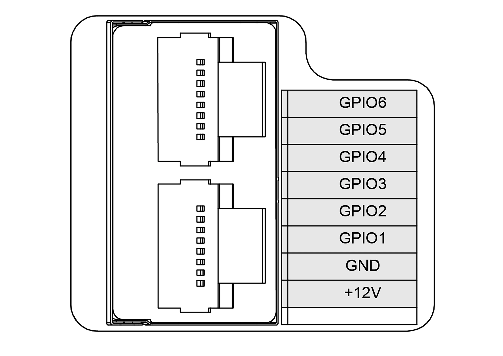
| GPIO编号 | NX引脚号 | 复用关系 | debugfs文件系统的引脚名 |
|---|---|---|---|
| GPIO1 | 203 | UART1_TXD | GPIO3_PR.02 |
| GPIO2 | 205 | UART1_RXD | GPIO3_PR.03 |
| GPIO3 | 232 | I2C2_SCL | GPIO3_PI.03 |
| GPIO4 | 234 | I2C2_SDA | GPIO3_PI.04 |
| GPIO5 | 128 | GPIO | GPIO3_PCC.02 |
| GPIO6 | 130 | GPIO | GPIO3_PCC.03 |
注意：
NVIDIA的GPIO的操作方式有很多种，NVIDIA的GPIO定义可以参考如下链接： https://docs.nvidia.com/jetson/archives/r35.2.1/DeveloperGuide/text/HR/JetsonModuleAdaptationAndBringUp/JetsonOrinNxSeries.html#identifying-the-gpio-number
使用说明请参考：
调试接口
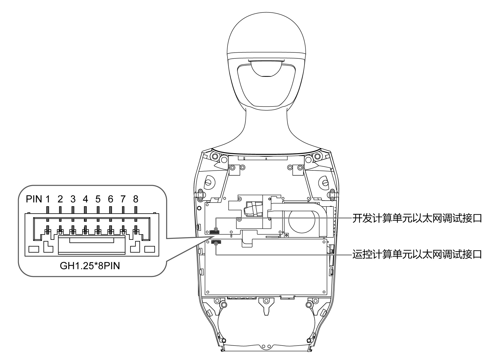
运控计算单元以太网调试接口及开发计算单元以太网调试接口相同，线序如下：
| PIN | 引脚描述 | RJ45线序 |
|---|---|---|
| 1 | 0P | 橙白 |
| 2 | 0N | 橙 |
| 3 | 1P | 绿白 |
| 4 | 1N | 绿 |
| 5 | 2P | 蓝白 |
| 6 | 2N | 蓝 |
| 7 | 3P | 棕白 |
| 8 | 3N | 棕 |
机载计算机
G1-EDU 机载标配 1 块【运控计算单元】，并且标配一块【开发计算单元】。
| 参数 | 开发计算单元（ PC2 ) |
|---|---|
| 型号 | Jetson Orin NX |
| CPU | Arm® Cortex®-A78AE |
| 内核数 | 8 |
| 线程数 | 8 |
| 最大睿频频率 | 2GHz |
| 显存 | 16G |
| 内存 | 16G |
| 缓存 | 2MB L2 + 4MB L3 |
| 存储 | 2T |
| 英特尔® 图像处理单元 | 6.0 |
| GPU | 搭载 32 个 Tensor Core 的 1024 核 NVIDIA Ampere 架构 GPU |
| 显卡最大动态频率 | 918MHz |
| 高斯和神经加速器 | 3.0 |
| 英特尔®深度学习提升 | 是 |
| 英特尔®Adaptix™ 技术 | 是 |
| 英特尔®超线程技术 | 是 |
| 指令集 | 64bit |
| OpenGL | 4.6 |
| OpenCL | 3.0 |
| DirectX | 12.1 |
| IP 地址 | 192.168.123.164 |
- 【运控计算单元】为 Unitree 运动控制程序专用，不对外开放。开发者仅可使用【开发计算单元】进行二次开发。初始用户名：
unitree, 密码:123。- 表中PC2【开发计算单元】，地址为192.168.123.164。
- CPU 模块发货时可能变更为不低于上述的性能的更先进版本。
G1雷达与相机的视场角
G1头部搭载LIVOX-MID360激光雷达，为机器人提供了卓越的环境感知能力。激光雷达采用全方位、全角度的扫描技术，FOV水平可达360°，竖直最大59°，能够实时获取精准的环境数据。它能够快速识别和测量周围的物体，提供高分辨率的点云数据。
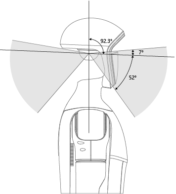
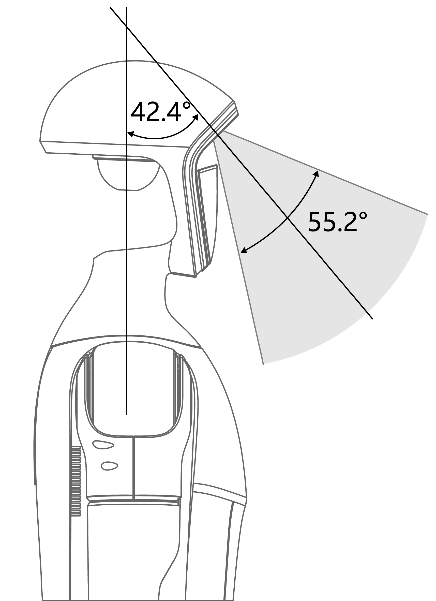
G1头部搭载D435i深度相机，为机器人提供了卓越的视觉感知能力，能够更准确地感知和理解周围环境，实现精确的空间感知和障碍物检测，使机器人能够更智能、灵活地与环境进行交互和应对各种场景。

关节电机
G1 关节采用了 Unitree 自研电机，具备出色的性能和特点。电机的最大扭矩为 120N.m，采用了中空轴线的设计，使得电机在结构上更加轻量化、紧凑化。电机还配备了双编码器，提供更准确的位置和速度反馈，以满足高精度控制的需求。
关节顺序名称与关节限位
| 关节序号 | 关节名称 | 限位(弧度) |
|---|---|---|
| 0 | L_LEG_HIP_PITCH | -2.5307~2.8798 |
| 1 | L_LEG_HIP_ROLL | -0.5236~2.9671 |
| 2 | L_LEG_HIP_YAW | -2.7576~2.7576 |
| 3 | L_LEG_KNEE | -0.087267~2.8798 |
| 4 | L_LEG_ANKLE_PITCH | -0.87267~0.5236 |
| 5 | L_LEG_ANKLE_ROLL | -0.2618~0.2618 |
| 6 | R_LEG_HIP_PITCH | -2.5307~2.8798 |
| 7 | R_LEG_HIP_ROLL | -2.9671~0.5236 |
| 8 | R_LEG_HIP_YAW | -2.7576~2.7576 |
| 9 | R_LEG_KNEE | -0.087267~2.8798 |
| 10 | R_LEG_ANKLE_PITCH | -0.87267~0.5236 |
| 11 | R_LEG_ANKLE_ROLL | -0.2618~0.2618 |
| 12 | WAIST_YAW | -2.618~2.618 |
| 13 | WAIST_ROLL | -0.52~0.52 |
| 14 | WAIST_PITCH | -0.52~0.52 |
| 15 | L_SHOULDER_PITCH | -3.0892~2.6704 |
| 16 | L_SHOULDER_ROLL | -1.5882~2.2515 |
| 17 | L_SHOULDER_YAW | -2.618~2.618 |
| 18 | L_ELBOW | -1.0472~2.0944 |
| 19 | L_WRIST_ROLL | -1.972222054~1.972222054 |
| 20 | L_WRIST_PITCH | -1.614429558~1.614429558 |
| 21 | L_WRIST_YAW | -1.614429558~1.614429558 |
| 22 | R_SHOULDER_PITCH | -3.0892~2.6704 |
| 23 | R_SHOULDER_ROLL | -2.2515~1.5882 |
| 24 | R_SHOULDER_YAW | -2.618~2.618 |
| 25 | R_ELBOW | -1.0472~2.0944 |
| 26 | R_WRIST_ROLL | -1.972222054~1.972222054 |
| 27 | R_WRIST_PITCH | -1.614429558~1.614429558 |
| 28 | R_WRIST_YAW | -1.614429558~1.614429558 |
坐标系，关节旋转轴与关节零点
当各个关节均为零度时，各坐标系如下图。红色为 x 轴，绿色为 y 轴，蓝色为 z 轴。 | 23 dof | 29dof| |-------| ------| |
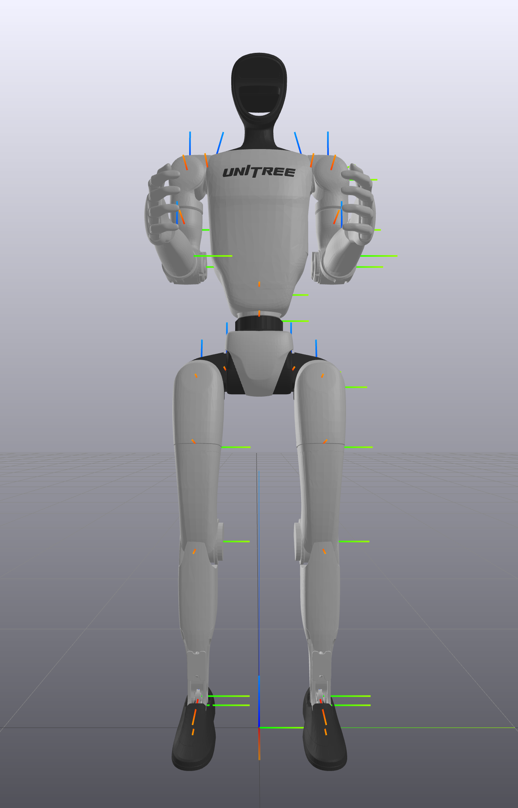
|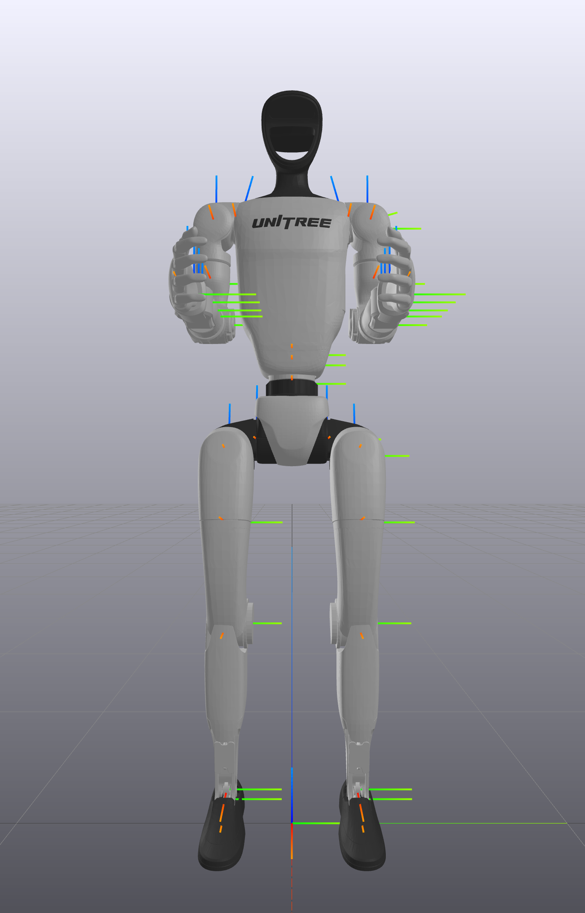
|机器人规格
| 型号 |
G1 | G1-EDU |
|---|---|---|
| 高宽厚(站立) | 1320x450x200mm | 1320x450x200mm |
| 高宽厚（折叠） | 690x450x300mm | 690x450x300mm |
| 带电池重量 | 约35kg | 约35kg |
| 总自由度 | 23 | 23~43 |
| 单腿自由度 | 6 | 6 |
| 腰部自由度 | 1 | 1+（可加选2个腰部自由度） |
| 单手臂自由度 | 5 | 5 |
| 单手自由度 | / | 7（可加选力控3指灵巧手Dex3-1）+2（可加选2个手腕自由度） |
| 关节输出轴承 | 工业级交叉滚子轴承（高精度，高承载力） | 工业级交叉滚子轴承（高精度，高承载力） |
| 关节电机 | 低惯量高速内转子永磁同步电机 （更好的响应速度和散热） |
低惯量高速内转子永磁同步电机 （更好的响应速度和散热） |
| 膝关节最大扭矩[1] | 90N.m | 120N.m |
| 手臂最大负载[2] | 约2Kg | 约3Kg |
| 小腿+大腿长度 | 0.6M | 0.6M |
| 手臂臂展 | 约0.45M | 约0.45M |
| 超大关节运动空间 | 腰关节：Z±155° 膝关节：0~165° 髋关节：P±154°、R-30~+170°、Y±158° |
腰关节：Z±155°、X±45°、Y±30° 膝关节：0~165° 髋关节：P±154°、R-30~+170°、Y±158° 腕关节：P±92.5°、Y±92.5° |
| 全关节中空内走线 | 有 | 有 |
| 关节编码器 | 双编码器 | 双编码器 |
| 散热系统 | 局部风冷散热 | 局部风冷散热 |
| 供电方式 | 13串锂电池 | 13串锂电池 |
| 基础算力 | 8核高性能CPU | 8核高性能CPU |
| 感知传感器 | 深度相机+3D激光雷达 | 深度相机+3D激光雷达 |
| 4麦克风阵列 | 有 | 有 |
| 5w扬声器 | 有 | 有 |
| WiFi6、蓝牙5.2 | 有 | 有 |
| 高算力模组 | / | NVIDIA Jetson Orin |
| 智能电池（快拆） | 9000mAh | 9000mAh |
| 充电器 | 54V 5A | 54V 5A |
| 手持式遥控器 | 有 | 有 |
| 续航时间 | 约2h | 约2h |
| 智能OTA升级 | 有 | 有 |
| 二次开发[3] | / | 有 |
注意
[1] 整机关节电机，最大扭矩有差异，此为其中最大关节电机的最大扭矩 [2] 手臂最大负载，不同手臂伸展姿态下，差异很大 [3] 详细功能，请查看二次开发手册 [4] 更详细保修条款，请参见产品保修手册 [5] 以上参数，在不同业务场景、不同型号参数配置等情况，在应用中有所差异，请以实际为准 [6] 人形机器人结构复杂，动力极其强劲，请用户让人和机器人保持足够的安全距离，请务必小心使用 [7] 产品外观后续可能会有升级调整，请以届时实物为准 [8] 本产品为民用机器人产品，请各位用户不要危险性改造和使用机器人。 [9] 请访问宇树科技官网了解更多产品相关条款与政策，请遵守各地区法律法规。